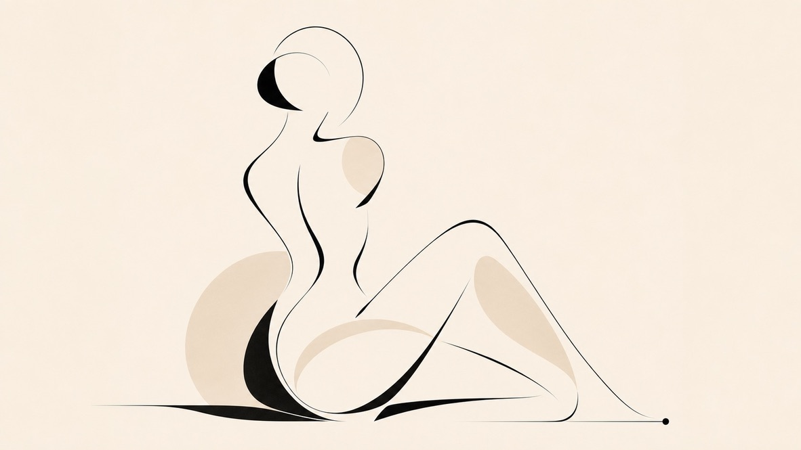
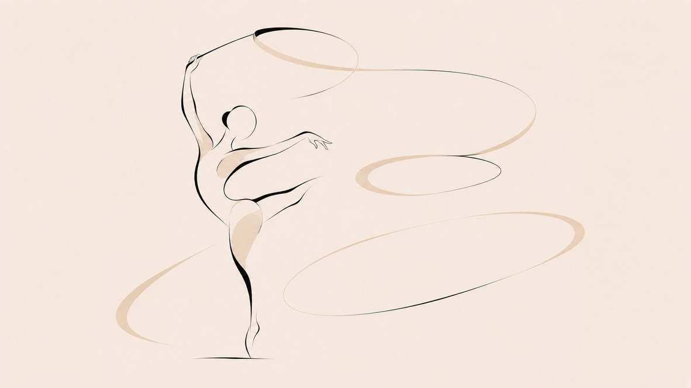
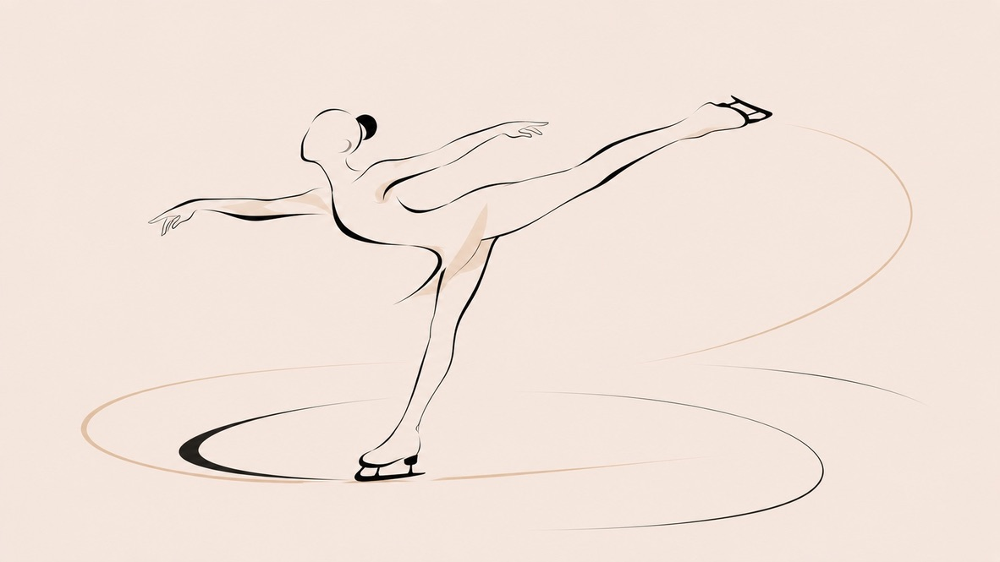
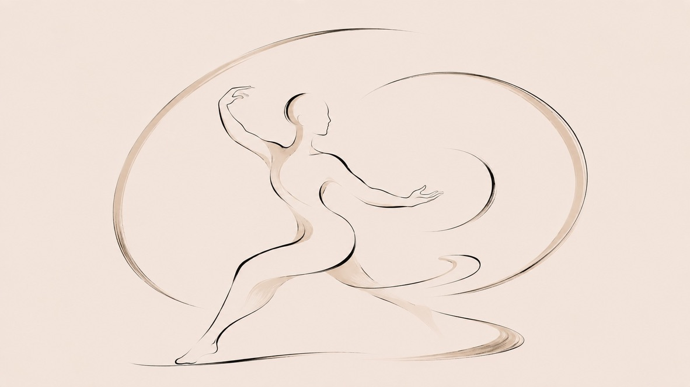

几笔线条，
留下人物的姿态。
坐姿、舞蹈、体操、滑冰与武术，用同一套简洁的视觉语言，呈现不同的身体节奏。

线条 · 留白 · 动势轮廓之外，
轮廓之外，
也能读到动作。
黑线交代身体的转折，浅色块带出体积，大块留白让姿态更清楚。人物省去了五官和衣饰的细节，重心、伸展与方向成为画面的主角。
看线条如何动起来 ↗







让线条，
继续流动。
两段约 10 秒的动态作品。人物的姿态、线条和色块随时间变化，延续这组图像的简洁语言。